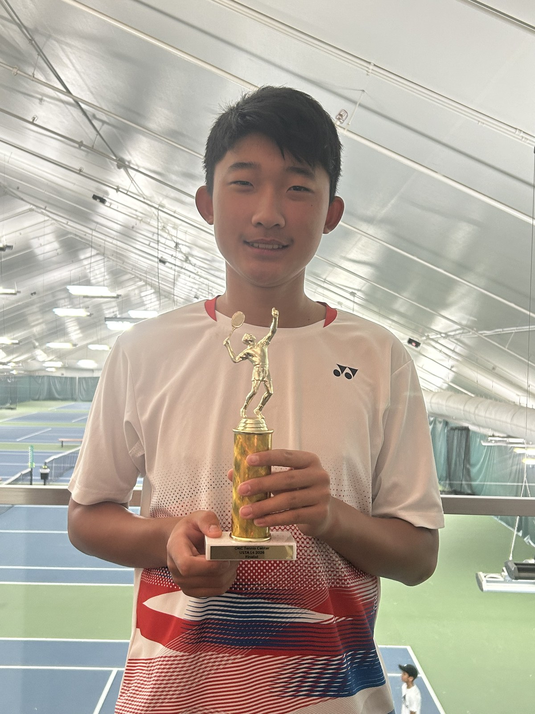

Placeholder project
Portfolio Website
A static HTML and CSS site designed to introduce my interests, organize future work, and give recruiters a clean first impression.
Designer, builder, systems thinker
I am a student exploring software, interfaces, and creative problem solving. This portfolio is a home for future projects, skills, and work I want recruiters to understand at a glance.
Studying computer science fundamentals and practical software development.
Interested in design systems, user experience, and clear visual communication.
Preparing a portfolio for internships, early career roles, and recruiter review.
Projects
I am just getting started, so these placeholders are ready to become real project writeups as I build coursework, personal experiments, and team projects.
Placeholder project
A static HTML and CSS site designed to introduce my interests, organize future work, and give recruiters a clean first impression.
Placeholder project
A future space for small programming exercises, data structures notes, algorithms practice, and experiments from computer science coursework.
Placeholder project
A future collection of interface sketches, layout studies, and visual design explorations focused on making software easier to use.
Skills
These are starter categories for the skills I am building now and plan to keep expanding as I complete more projects.
Python, Java, JavaScript, data structures, algorithms, debugging.
HTML, CSS, responsive layouts, accessibility basics, clean page structure.
UI layout, typography, color, wireframing, interaction patterns.
Git, GitHub, Figma, VS Code, documentation, project organization.
About
My name is Tony Nakayama, and I am a computer science student interested in building software that is both technically strong and thoughtfully designed. I am especially drawn to the point where programming, user experience, and visual communication meet, because that is where complex tools can start to feel clear, approachable, and useful.
My current focus is developing a strong foundation in programming, problem solving, web development, and interface design. I am building experience with HTML, CSS, responsive layouts, GitHub, and the fundamentals of software engineering while continuing to grow in areas like data structures, debugging, documentation, and project planning.
I created this portfolio as a professional home for future classwork, personal projects, design explorations, and technical experiments. As I add more work, I want recruiters to be able to quickly understand what I am learning, how I think through problems, and where I could contribute on a team.

Building a strong foundation in programming, problem solving, and software systems.
Learning how visual hierarchy, usability, and clear communication shape products.
Looking for opportunities to learn from strong teams and contribute with care.
Links
These placeholders can be replaced with real profile URLs when they are ready.
Contact
I am interested in internships, student programs, mentorship, and opportunities at technology and design-focused companies.